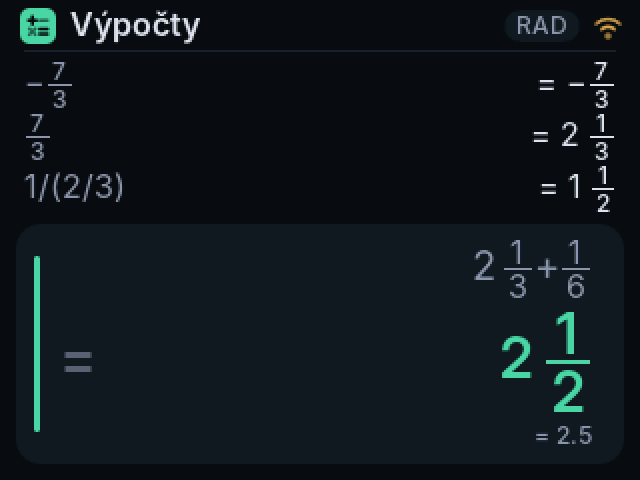
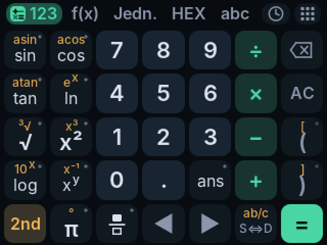
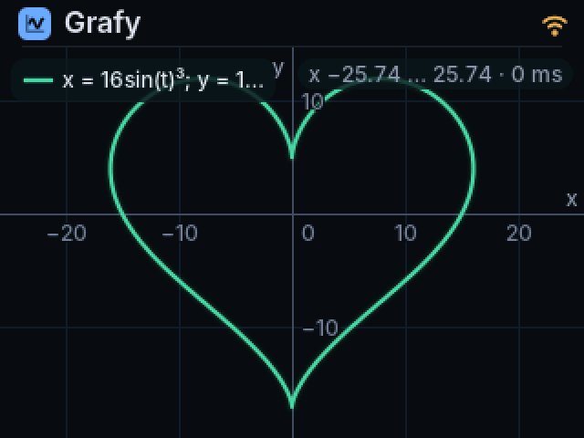
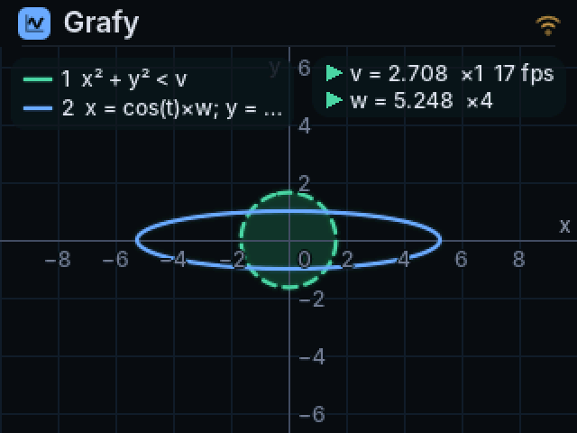
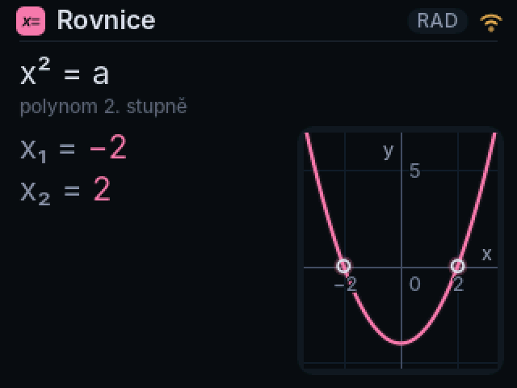
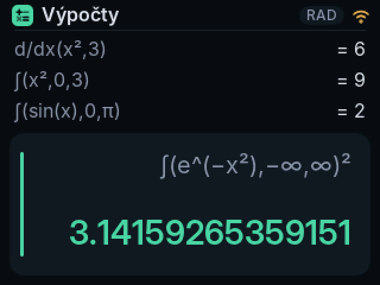
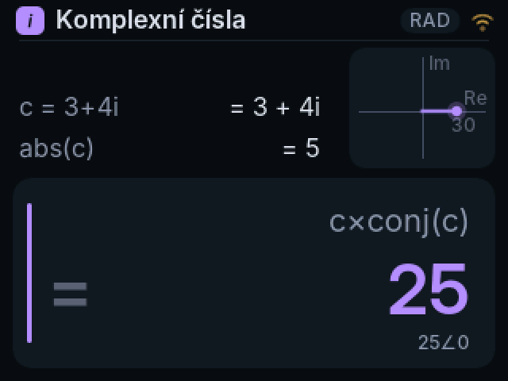
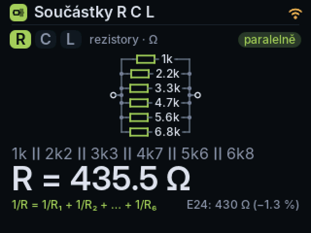

ESP32-S3 · I2S · Gemini API
Hlasový asistent v češtině
Mikrofon a reproduktor na ESP32-S3: mluví se na tlačítko, odpovídá přes Gemini a pamatuje si rozhovor.
 Caltucalor
Caltucalor
Kapesní kalkulačka · ESP32-S3
Caltucalor má dva displeje: nahoře výsledky a grafy, dole dotykovou klávesnici. Nebo jen jeden a klávesnici v mobilu – verzi si vybereš při instalaci. Vyzkoušej si ho přímo tady a program do něj nahraješ z prohlížeče – stačí USB-C kabel.


Když už v kalkulačce Caltucalor je, tohle ji jen aktualizuje. Co je nového, najdeš v historii aktualizací.
Verzi můžeš kdykoli vyměnit – stačí nainstalovat tu druhou. Uložené grafy a nastavení zůstanou.
USB-C kabel zapoj přímo do desky XIAO (ne do nabíječky). Zavři Serial Monitor a jiné programy, které můžou mít port otevřený.
Obrázky jsou pixel po pixelu to, co kalkulačka kreslí na displej.






Historie aktualizací
Velké aktualizace přinesly nové režimy a velké změny, malé jsou opravy a menší novinky.
Vývoj
Jak se z kalkulačky pro počítač stala za 23 dní kapesní kalkulačka. Vyvíjí ji wreze spolu s Claudem, AI asistentem od Anthropicu.
Caltucalor začal jako kalkulačka pro počítač v C#. Napsal ji wrezeho kamarád hamter, který s projektem i pomáhal. Na konci října 2026 z ní začala vznikat skutečná kapesní kalkulačka na čipu ESP32-S3 – s vlastním displejem, klávesnicí a baterií.
Většinu toho, co kalkulačka umí, vymyslel wreze. Některé nápady přinesl hamter – třeba komplexní čísla a proměnné v čase (t, u, v, w), se kterými se grafy hýbou. wreze taky vybírá a zapojuje hardware a každou verzi zkouší na skutečné kalkulačce. Claude píše kód, testy a dokumentaci a hlídá, aby každá verze počítala přesně jako ta původní.
Od přepisu výpočtů po dotykovou klávesnici.
Výpočetní jádro kalkulačky, kterou v C# napsal hamter, jsme přepsali do C++, aby běželo přímo na čipu ESP32-S3. Že počítá stejně jako originál, hlídá test: 1,2 milionu náhodných příkladů se spočítá v obou verzích a výsledky se porovnají – dodnes bez jediného rozdílu. První verze ukazovala výsledky na barevném displeji a příklady dostávala zkušebně přes Bluetooth nebo z počítače.
Přibyly grafy – funkce i vztahy x a y, jako kružnice nebo nerovnice. Kalkulačka dostala nový vzhled s vyhlazeným písmem Inter (i s háčky a čárkami), animace a procesor i displej puštěné na plný výkon.
Menu s režimy: komplexní čísla (s nápadem přišel hamter), matice, rovnice a soustavy rovnic, víc grafů najednou se zoomem, posunem a hledáním kořenů. Každý režim dostal ikonu. Ovladač displeje jsme napsali vlastní – obraz posílá přes DMA na 80 MHz a kreslí na druhém jádře procesoru, takže první jádro může mezitím počítat.
Klávesnici kreslí přímo kalkulačka jako obrázek 320 × 240 a každý režim má svou hlavní stránku kláves. Zkušebně se zobrazovala v mobilu přes Wi-Fi, teď je na dotykovém displeji pod hlavním. Přibyl psaný řádek s kurzorem, parametrické grafy, proměnná t a animace grafů v čase – další nápad, se kterým přišel hamter.
Výsledky jako přesné zlomky (počítá se s celými čitateli a jmenovateli, ne s desetinnými čísly), soustavy HEX a BIN s bitovými operacemi, přerušení dlouhého výpočtu, proměnné u, v, w, uložené grafy, které přežijí vypnutí, a režim Součástky se schématem zapojení.
Kalkulačka se přestěhovala na malou desku Seeed XIAO ESP32S3 (21 × 17,8 mm) a piny i ztlumení podsvícení jsme upravili pro ni. Pak přibyla baterie s nabíječkou přes USB-C a vypínač – stav baterie ukazuje kalkulačka v liště nahoře.
Derivace, integrály, statistika a vlastní proměnné; elektrotechnika (Ohmův zákon, RC a LC články, rezistor k LED, dělič, hledání kombinací odporů); polární grafy, tečny a plochy pod křivkou. Pak menu na dvě strany, rychlejší grafy bez ztráty kvality, číslo verze v Nastavení a tahle stránka s instalací přímo z prohlížeče. Na ní běží i živá ukázka: stejný kód kalkulačky jako v čipu, přeložený do WebAssembly.
Klávesnice se přestěhovala z mobilu na druhý, dotykový displej pod hlavním a Wi-Fi je v téhle verzi úplně vypnutá. Oba displeje sdílejí jednu sběrnici SPI, dotyk se kalibruje třemi křížky a čip dotyku (FT6336, CST816, GT911…) se pozná sám. Verze s klávesnicí v mobilu zůstává jako druhá volba při instalaci a k oběma je návod v PDF.
Vývoj pokračuje. Každá nová verze se objeví v Historii a nainstaluje se odsud jedním kliknutím.
Každá verze vzniká v rozhovoru: nápad, kód, testy, zkouška na skutečné kalkulačce, opravy.
Od stisku klávesy po obrázek na displeji.
Než se nová verze objeví tady, projde tímhle.
O autorech
Většinu toho, co kalkulačka umí, vymyslel wreze. Komplexní čísla a proměnné v čase přinesl hamter.
Deska XIAO ESP32S3, displej s výsledky, dotykový displej s klávesnicí, baterie s nabíječkou TP4056 a vypínač.
Nové verze zkouší na skutečné kalkulačce a hlásí, co je potřeba opravit nebo přidat.
Caltucalor není první věc, kterou wreze s ESP32 postavil.
ESP32-S3 · I2S · Gemini API
Mikrofon a reproduktor na ESP32-S3: mluví se na tlačítko, odpovídá přes Gemini a pamatuje si rozhovor.
ST7789 · WebSocket · JPEG
Video z počítače na displeji 240 × 320 přes Wi-Fi – Python server, dekódování JPEG a obě jádra procesoru.
OLED · ILI9341
Klasika mezi bastlíři: černobílé video na OLED 128 × 64, později na barevném displeji s plynulým zvětšením.
TLSR8359 · e-ink
E-ink cenovka Hanshow s odemčeným čipem a vlastním firmwarem, nahraným přes můstek z ESP32-S3.
ESP32-S3 · NAT
ESP32-S3 jako opakovač a hotspot, který zvládne i video v HD.
Unreal Engine
2D hra v Unreal Engine, na které pracují spolu najednou přes Multi-User Editing.
Tahle stránka i programy pro instalaci jsou v repozitáři wreze11/caltucalor.